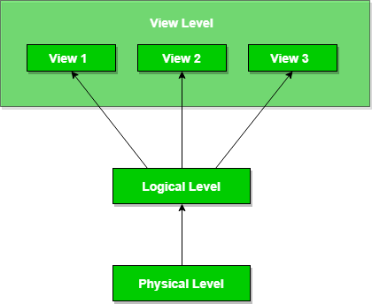

Database systems comprise of complex data-structures. In order to make the system efficient in terms of retrieval of data, and reduce complexity in terms of usability of users, developers use abstraction i.e. hide irrelevant details from the users. This approach simplifies database design.
There are mainly 3 levels of data abstraction:
Physical: This is the lowest level of data abstraction. It tells us how the data is actually stored in memory. The access methods like sequential or random access and file organisation methods like B+ trees, hashing used for the same. Usability, size of memory, and the number of times the records are factors which we need to know while designing the database.
Suppose we need to store the details of an employee. Blocks of storage and the amount of memory used for these purposes is kept hidden from the user.
Logical: This level comprises of the information that is actually stored in the database in the form of tables. It also stores the relationship among the data entities in relatively simple structures. At this level, the information available to the user at the view level is unknown.
We can store the various attributes of an employee and relationships, e.g. with the manager can also be stored.
View: This is the highest level of abstraction. Only a part of the actual database is viewed by the users. This level exists to ease the accessibility of the database by an individual user. Users view data in the form of rows and columns. Tables and relations are used to store data. Multiple views of the same database may exist. Users can just view the data and interact with the database, storage and implementation details are hidden from them.

The main purpose of data abstraction is achieving data independence in order to save time and cost required when the database is modified or altered.
We have namely two levels of data independence arising from these levels of abstraction :
Physical level data independence : It refers to the characteristic of being able to modify the physical schema without any alterations to the conceptual or logical schema, done for optimisation purposes, e.g., Conceptual structure of the database would not be affected by any change in storage size of the database system server. Changing from sequential to random access files is one such example.These alterations or modifications to the physical structure may include:
- Utilising new storage devices.
- Modifying data structures used for storage.
- Altering indexes or using alternative file organisation techniques etc.
Logical level data independence: It refers characteristic of being able to modify the logical schema without affecting the external schema or application program. The user view of the data would not be affected by any changes to the conceptual view of the data. These changes may include insertion or deletion of attributes, altering table structures entities or relationships to the logical schema etc.